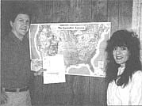
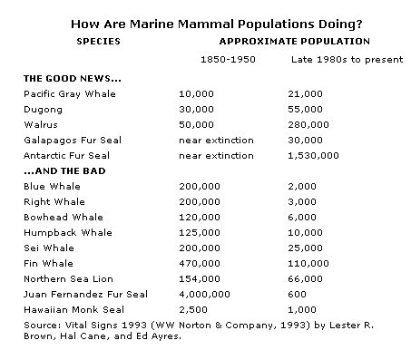
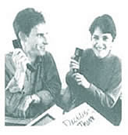
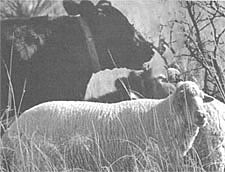

BITS &PIECES
Working Assets offers an alternative to "business-as-usual" telephone service.
If you ever wanted to learn more about property caretaking opportunities, have we got the newsletter for you. The Caretaker Gazette, published since 1983, features job listings, profiles of fellow caretakers, and letters to the editor. Most jobs are in the United States, but recently there have been international listings in Central America and Spain. Written and researched for landowners, interested readers, and job seekers, the newsletter is privately owned and is published bimonthly.
The circulation of The Caretaker Gazette is about 1,000 and is the only newsletter offering exclusive caretaking opportunities. In addition to career caretakers, publisher Gary Dunn sees an audience in college students. He has just issued two subscriptions to forestry and agricultural libraries at Bennington College in Vermont and Penn State. "The newsletter provides a good source of information for students who have always wanted to be caretakers and are not sure about where they are going professionally," Gary reports.
For subscription information please write to The Caretaker Gazette, 221 Wychwood Road, Westfield, NJ 07090; Telephone: (908) 654-6600. The cost of a one-year subscription (6 issues) is $18.
If you turn your ear to the wind you can hear it, no matter how far into the country you may live...we're all living next to the information highway. That roadway you travel upon whenever you turn on the TV or pick up the phone costs consumers billions every year. But as consumers, what kind of real choice have we had in choosing our phone service? Despite deregulation of the long-distance industry in 1987, there is still precious little price difference between the current three major carriers (AT&T, MCI, and Sprint) for small-scale users. We are a captive audience, forced to pay an arbitrary rate for a required service.
In 1988, Peter Barnes and Laura Scher decided to offer an alternative. Their company, called Working Assets was able to start renting space from one of the big three long-distance companies in 1988. Its company premise was that Working Assets would offer basic interstate rates guaranteed to be cheaper than any of the big three as well as devote part of its total revenues to nonprofit organizations. Those revenues are distributed each year among 36 nonprofit groups working in one or more of four issue areas: economic justice, peace building, the environment, and human rights. All groups given donations are selected by the company's customers and professionally screened by the Tides Foundation.
Currently, Working Assets has 150,000 members. It generated $1 million for nonprofit organizations in 1993 and projects $1.2 million for 1994. By printing all bills on recycled paper, and planting 17 trees for every ton of paper they use, they appear to be practicing what they preach about responsible industry.
But more important, Working Assets has set an example for other businesses. It is demonstrating that it is possible to turn a profit while being socially responsible. In addition to financial incentives, it lets consumers participate in the decisionmaking process involving the destination of a percentage of this profit, and conveniently provides them with a voice in a political arena. So if you'd enjoy a taste of empowerment when paying your monthly phone bill, call Working Assets at 1-800-788-8588.
- Elizabeth Broome
The sheep at the Jornada Experimental Range in New Mexico have found a friend in cows. In 1983, sheep were first brought onto the range as an ecological experiment to make the most of mixed vegetation. Since cattle eat only grass, there was a lot of edible material that was not being consumed.
After suffering severe predation loss from coyotes, scientists realized they needed to find a way to offer the sheep more protection naturally. Their solution was to bond cattle and sheep together. Since cattle have an innate dislike of canines, scientists wanted to learn whether the sheep and cattle were competitive or compatible and could benefit one another. In order to create compatibility, the sheep and cattle lived together for 30 to 60 days when they were both between the ages of 60 and 90 days. When bonding the animals, it was important to get the right combination and not put aggressive animals together. This period of confinement was crucial in establishing a bond.
The result of this bonding was protection for the sheep. When coyotes came onto the range, cattle would face them down and cause them to retreat. The sheep would flock together and stand between the cattle, protecting themselves.
On a financial level, bonding sheep and cattle can also be a money saver. Conventional sheep fencing can run $2,000 per mile, while the fencing required to contain cattle can be half that. The bonded sheep were contained with fencing that began 30 inches above ground. Unbonded sheep would crawl under fencing that high, but not one of the bonded sheep left the cattle or pasture.
The bonded animals also helped to reduce spot grazing on the range. While cattle usually spread out when they graze, unbonded sheep usually bunch closely together and are prone to grazing heavily in small areas. Properly stocking the animals so that sheep spread their grazing along with the cattle helps to preserve range resources and reduce erosion. Although this bonding technique must be tested on a site-by-site basis, and results are not conclusive yet, researchers confide a good deal of optimism and suggest that this may usher in a new era in predator control.
|
 Bonding cattle and sheep together in a herd offers natural predator protection. |
 |
 |
|
 |
|
|